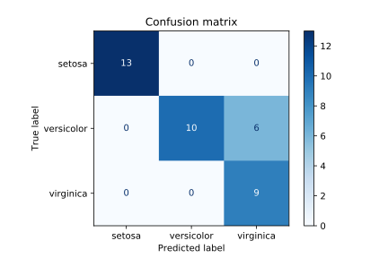
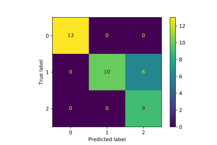
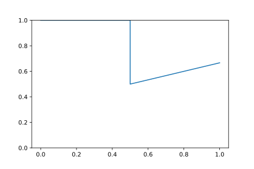
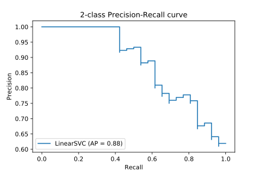
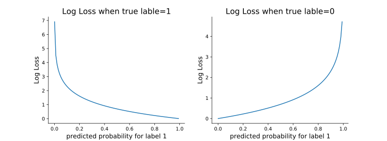

Windows 10
Python 3.7.3 @ MSC v.1915 64 bit (AMD64)
Latest build date 2020.05.10
sklearn version: 0.22.1
评价指标
sklearn提供了以下评估指标可用于分类任务：
| 函数 | 说明 |
|---|---|
accuracy_score(y_true, y_pred[, …]) |
✅ 计算accuracy |
balanced_accuracy_score(y_true, y_pred) |
✅ 计算 balanced accuracy |
precision_score(y_true, y_pred[, …]) |
✅ 计算 precision |
recall_score(y_true, y_pred[, …]) |
✅ 计算 recall |
f1_score(y_true, y_pred[, labels, …]) |
✅ 计算 F1 score |
fbeta_score(y_true, y_pred, beta[, …]) |
✅ 计算 F-beta score |
classification_report(y_true, y_pred) |
✅ 显示主要的分类指标 |
precision_recall_fscore_support(…) |
✅ 计算每个类别的 precision、recall、F-measure、support |
confusion_matrix(y_true, y_pred[, …]) |
✅ 计算混淆矩阵 |
precision_recall_curve(y_true, …) |
✅ 计算不同概率阈值的 precision 和 recall |
roc_curve(y_true, y_score[, …]) |
✅ 计算 Receiver operating characteristic (ROC) |
roc_auc_score(y_true, y_score[, …]) |
✅ 计算 ROC 曲线下的面积（AUC） |
auc(x, y) |
✅ 计算 AUC，使用梯形计算公式 |
average_precision_score(y_true, y_score) |
✅ 计算average precision (AP) |
brier_score_loss(y_true, y_prob[, …]) |
✅ 计算 Brier score |
cohen_kappa_score(y1, y2[, labels, …]) |
🔲 Cohen’s kappa: a statistic that measures inter-annotator agreement |
dcg_score(y_true, y_score[, k, …]) |
🔲 计算Discounted Cumulative Gain |
hamming_loss(y_true, y_pred[, …]) |
✅ 计算 average Hamming loss |
hinge_loss(y_true, pred_decision[, …]) |
🔲 计算 Average hinge loss (non-regularized) |
jaccard_score(y_true, y_pred[, …]) |
✅ 计算 Jaccard similarity coefficient score |
log_loss(y_true, y_pred[, eps, …]) |
✅ Log loss, aka logistic loss or cross-entropy loss |
matthews_corrcoef(y_true, y_pred[, …]) |
🔲 计算 the Matthews correlation coefficient (MCC) |
multilabel_confusion_matrix(y_true, …) |
✅ Compute a confusion matrix for each class or sample |
ndcg_score(y_true, y_score[, k, …]) |
🔲 Compute Normalized Discounted Cumulative Gain. |
zero_one_loss(y_true, y_pred[, …]) |
✅ 计算Zero-one分类损失 |
应用场景
只能用于二分类：
- precision_recall_curve
- roc_curve
- brier_score_loss
只能用于多分类：
- confusion_matrix
- balanced_accuracy_score
- hinge_loss
- cohen_kappa_score
- matthews_corrcoef
多分类和多标签：
- accuracy_score
- recall_score
- precision_score
- f1_score
- fbeta_score
- classification_report
- precision_recall_fscore_support
- hamming_loss
- jaccard_similarity_score
- log_loss
- zero_one_loss
二分类和多标签：
- average_precision_score
- roc_auc_score
ranking：
- dcg_score
- ndcg_score
accuracy
$$ \texttt{accuracy}(y, \hat{y}) = \frac{1}{n_\text{samples}} \sum_{i=0}^{n_\text{samples}-1} \mathbb{I}(\hat{y}_i = y_i) $$
如果设置了权重，则一般化的公式如下：
$$ \texttt{accuracy}(y, \hat{y}) = \frac{1}{\sum_{i=0}^{n_\text{samples}-1}w_i} \sum_{i=0}^{n_\text{samples}-1} \mathbb{I}(\hat{y}_i = y_i)w_i $$
from sklearn.metrics import accuracy_score
accuracy_score(y_true, y_pred, normalize=True, sample_weight=None)
normalize: 如果False，则返回分类正确的样本数量，如果True，则返回总体的正确率。
y_true = [0, 1, 2, 3]
y_pred = [0, 2, 1, 3]
print(accuracy_score(y_true, y_pred))
print(accuracy_score(y_true, y_pred, normalize=False))
print(accuracy_score(y_true, y_pred, sample_weight=(1,1,1,10)))
0.5
2
0.8461538461538461
balanced accuracy
$$ \texttt{balanced accuracy}(y, \hat{y}) = \frac{1}{n_\text{class}} \sum_{i=1}^{n_\text{class}} \text{accuracy}_i $$
如果设置了权重，则$\text{accuracy}_i$应该先按权重计算。
from sklearn.metrics import balanced_accuracy_score
balanced_accuracy_score(y_true, y_pred, sample_weight=None, adjusted=False)
adjusted: The best value is 1 and the worst value is 0 whenadjusted=False. When true, the result is adjusted for chance, so that random performance would score 0, and perfect performance scores 1.
y_true = [0, 1, 0, 0, 1, 0]
y_pred = [0, 1, 0, 0, 0, 1]
balanced_accuracy_score(y_true, y_pred)
0.625
confusion matrix
from toolkit import H
from sklearn.metrics import confusion_matrix
from sklearn.metrics import multilabel_confusion_matrix
from sklearn.metrics import plot_confusion_matrix
from sklearn.metrics import ConfusionMatrixDisplay
import numpy as np
confusion_matrix(y_true, y_pred, labels=None, sample_weight=None, normalize=None)
y_true = [0, 1, 0, 0, 1, 0, 2, 1, 2, 2]
y_pred = [0, 1, 0, 0, 0, 1, 2, 1, 0, 2]
confusion_matrix(y_true, y_pred, labels=[1, 0, 2])
array([[2, 1, 0],
[1, 3, 0],
[0, 1, 2]], dtype=int64)
multilabel confusion matrix
multilabel_confusion_matrix(y_true, y_pred, sample_weight=None,
labels=None, samplewise=False)
y_true = ["cat", "ant", "cat", "cat", "ant", "bird"]
y_pred = ["ant", "ant", "cat", "cat", "ant", "cat"]
multilabel_confusion_matrix(y_true, y_pred,
labels=["ant", "bird", "cat"])
y_true = np.array([[1, 0, 1],
[0, 1, 0]])
y_pred = np.array([[1, 0, 0],
[0, 1, 1]])
multilabel_confusion_matrix(y_true, y_pred, samplewise=True)
array([[[1, 0],
[1, 1]],
[[1, 1],
[0, 1]]], dtype=int64)
confusion matrix可视化
confusion_matrix函数和multilabel_confusion_matrix函数可以通过labels参数设置label的排列顺序。但它们的输出是ndarray对象，并没有指明真实值、预测值与行、列的对应关系。使用plot_confusion_matrix函数可以把混淆矩阵输出为图表，得到更直观的效果：
plot_confusion_matrix(estimator, X, y_true, labels=None, sample_weight=None,
normalize=None, display_labels=None, include_values=True,
xticks_rotation='horizontal', values_format=None,
cmap='viridis', ax=None)
要注意的是，需要把estimator传入plot_confusion_matrix函数。
import numpy as np
import matplotlib.pyplot as plt
from sklearn import svm, datasets
from sklearn.model_selection import train_test_split
# import some data to play with
iris = datasets.load_iris()
X = iris.data
y = iris.target
class_names = iris.target_names
# Split the data into a training set and a test set
X_train, X_test, y_train, y_test = train_test_split(X, y, random_state=0)
# Run classifier, using a model that is too regularized (C too low) to see
# the impact on the results
classifier = svm.SVC(kernel='linear', C=0.01).fit(X_train, y_train)
np.set_printoptions(precision=2)
# Plot non-normalized confusion matrix
disp = plot_confusion_matrix(classifier, X_test, y_test,
display_labels=class_names,
cmap=plt.cm.Blues,
include_values=True,
normalize=None)
disp.ax_.set_title("Confusion matrix")
print(disp.confusion_matrix)
plt.show()
[[13 0 0]
[ 0 10 6]
[ 0 0 9]]

通过 plot_confusion_matrix 函数返回的ConfusionMatrixDisplay对象的ax_属性可以访问Axes对象。
如果已有混淆矩阵，也可以直接通过ConfusionMatrixDisplay类输出混淆矩阵图。
ConfusionMatrixDisplay(confusion_matrix, display_labels)
ConfusionMatrixDisplay.plot(include_values=True, cmap='viridis',
xticks_rotation='horizontal',
values_format=None, ax=None)
disp_2 = ConfusionMatrixDisplay(disp.confusion_matrix,
display_labels=[0,1,2]).plot()
# disp_2.figure_.savefig()
disp_2.figure_

从二分类到多分类、多标签
一些评价指标基本上是为二分类任务定义的（例如 f1_score、roc_auc_score）。在这些情况下，默认情况下仅评估 positive label。
将 binary metric 拓展到 multiclass 或 multilabel 问题时，数据将被视为二分类问题的集合，每个类都有一个metric。 例如，以下两种情况都被拆分为3个二分类任务：
multiclass task: [1, 2, 3]
multilabel task: [1, 0, 1]
然后各个类的metric将以某种方式作均值运算，得到的均值将作为 multiclass 或 multilabel 问题的评价指标。 均值运算的方式通过 average 参数指定。
macro：各个 binary metrics 作简单的算术平均，每个类别具有相同的权重。binary metrics 由各类的混淆矩阵得到（每个类有一个混淆矩阵）。在那些具有不频繁类别，但不频繁类仍然重要的问题上，macro-averaging是突出其性能的一种手段。但另一方面，所有类别同样重要的假设通常是不真实的，因此 macro-averaging 将过度强调不频繁类的低性能。weighted：每个样本赋予一个权重，各个类的权重取决于它们样本的权重。所以实际上，weighted平均是加权的macro平均。micro： 各个类的混淆矩阵求和，再根据样本数求平均值（各个样本有同样的权重），得到平均混淆矩阵，最后根据平均混淆矩阵求出metric。在 multilabel 任务和需要忽略频繁类的 multiclass任务中，Micro-averaging 可能是优先选择的。samples：仅适用于 multilabel problems。 各个 binary metrics 作的算术平均，binary metrics 由各样本的混淆矩阵得到（每个样本有一个混淆矩阵）。并返回 (sample_weight-weighted) 加权平均。None：返回每个类的 score 。
precision、recall、F1
二分类
一般情况下，二分类混淆矩阵的precision、recall、F1计算公式如下：
$$ \text{precision} = \frac{TP}{TP+FP} $$
$$ \text{recall} = \frac{TP}{TP+FN} $$
$$ F1 = \frac{2\times\text{precision}\times \text{recall}}{\text{precision}+ \text{recall}} $$
如果是多分类混淆矩阵，则可能使用如下计算公式：
Macro-averaging
宏平均（Macro-averaging）是指所有类别的每一个统计指标值的算术平均值，计算公式如下：
$$ {P_{\text {macro}}=\frac{1}{n} \sum_{i=1}^{n} P_{i}} $$
$$ {R_{\text {macro}}=\frac{1}{n} \sum_{i=1}^{n} R_{i}} $$
$$ {F_{\text {macro}}=\frac{2 \times P_{\text {macro}} \times R_{\text {macro}}}{P_{\text {macro}}+R_{\text {macro}}}} $$
Micro-averaging
微平均（Micro-averaging）是对数据集中的每一个示例不分类别进行统计建立全局混淆矩阵，然后计算相应的指标。其计算公式如下：
$$ \begin{aligned} P_{\text {micro }}=\frac{\overline{T P}}{\overline{T P}+\overline{F P}}& =\frac{\frac{1}{n_{\text {class}}} \sum_{i=1}^{n} T P_{i}}{\frac{1}{n_{\text {class}}} \sum_{i=1}^{n} T P_{i}+\frac{1}{n_{\text {class}}} \sum_{i=1}^{n} F P_{i}} \\ &=\frac{\sum_{i=1}^{n} T P_{i}}{\sum_{i=1}^{n} T P_{i}+\sum_{i=1}^{n} F P_{i}} \end{aligned} $$
$$ {R_{\text {micro}}=\frac{\overline{TP}}{\overline{TP} + \overline{F N}}=\frac{\sum_{i=1}^{n} T P_{i}}{\sum_{i=1}^{n} T P_{i}+\sum_{i=1}^{n} F N_{i}}} $$
$$ {F_{\text {micro}}=\frac{2 \times P_{\text {micro}} \times R_{\text {micro}}}{P_{\text {micro}}+R_{\text {micro}}}} $$
在sklearn中，precision_score、recall_score和f1_score三个函数的接口是一致，它们拥有相同的参数。
precision_score(y_true, y_pred,labels = None, pos_label = 1,
average ='binary', sample_weight = None)
recall_score(y_true, y_pred, labels=None, pos_label=1,
average='binary', sample_weight=None)
f1_score(y_true, y_pred, labels=None, pos_label=1,
average='binary', sample_weight=None)
labels : list, optional。可以排除数据中存在的label，而如果输入数据中不存在的label，则会以0填充对应的位置。默认情况下，y_true和y_pred中的所有label会自动排序。
pos_label : str or int, 1 by default。对于二分类数据有效，如果数据是多分类的，该参数将被忽略。
average : string, [None, 'binary' (default), 'micro', 'macro', 'samples','weighted']。对于多类、多标签数据，此参数是必需的。如果为None，则返回每个类别的分数。否则将执行指定的平均类型。
-
'binary': 仅返回pos_label的分数，仅当二分类时才适用。 -
'micro': 返回micro平均。 -
'macro': 返回macro平均（未加权，即未考虑数据不平衡的问题） -
'weighted': 加权的macro平均，考虑数据不平衡的问题，可能会导致F1不在precision和recall之间。 -
'samples': 计算每个实例的指标，并找到其平均值，仅对于多标签分类有意义。
sample_weight : array-like of shape = [n_samples], optional。Sample weights.
假设现在有如下数据：
y_true = [0, 0, 0, 2, 1, 2, 0, 1, 1, 2]
y_pred = [0, 0, 2, 1, 0, 2, 0, 2, 1, 2]
导入函数：
from sklearn.metrics import precision_score
from sklearn.metrics import recall_score
from sklearn.metrics import f1_score
from sklearn.metrics import confusion_matrix
先计算出混淆矩阵如下：
confusion_matrix(y_true, y_pred, labels=[0,1,2])
array([[3, 0, 1],
[1, 1, 1],
[0, 1, 2]], dtype=int64)
根据公式，各分类的指标计算如下： $$ P_{0} = \frac{\text{正确预测为0的样本个数}}{\text{预测为0的样本个数}} = \frac{3}{4} \\ R_{0} = \frac{\text{正确预测为0的样本个数}}{\text{真实为0的样本个数}} = \frac{3}{4} \\ F_{0} = \frac{2\times P_{0}\times R_{0}}{P_{0} + R_{0}} = \frac{3}{4} $$
$$ P_{1} = \frac{\text{正确预测为1的样本个数}}{\text{预测为1的样本个数}} = \frac{1}{2} \\ R_{1} = \frac{\text{正确预测为1的样本个数}}{\text{真实为1的样本个数}} = \frac{1}{3} \\ F_{1} = \frac{2\times P_{1}\times R_{1}}{P_{1} + R_{1}} = \frac{2}{5} $$
$$ P_{2} = \frac{\text{正确预测为2的样本个数}}{\text{预测为2的样本个数}} = \frac{2}{4} \\ R_{2} = \frac{\text{正确预测为2的样本个数}}{\text{真实为2的样本个数}} = \frac{2}{3} \\ F_{2} = \frac{2\times P_{2}\times R_{2}}{P_{2} + R_{2}} = \frac{4}{7} $$
即
$$ P_{0} = \frac{3}{4} P_{1}=\frac{1}{2} P_{2}=\frac{1}{2} \\ R_{0} = \frac{3}{4} R_{1}=\frac{1}{3} R_{2}=\frac{2}{3} \\ F_{0} = \frac{3}{4} F_{1}=\frac{2}{5} F_{2}=\frac{4}{7} $$
precision_score(y_true, y_pred, average=None)
array([0.75, 0.5 , 0.5 ])
recall_score(y_true, y_pred, average=None)
array([0.75, 0.33, 0.67])
f1_score(y_true, y_pred, average=None)
array([0.75, 0.4 , 0.57])
再计算Macro-averaging和Micro-averaging：
$$ P_{\text {macro}} = \frac{1}{3}\times (\frac{3}{4} + \frac{1}{2} + \frac{1}{2}) = 0.58 \\ R_{\text {macro}} = \frac{1}{3}\times (\frac{3}{4} + \frac{1}{3} + \frac{2}{3}) = 0.58 \\ F_{\text {macro}} = \frac{1}{3}\times (\frac{3}{4} + \frac{2}{5} + \frac{4}{7}) = 0.57 $$
注意：在sklearn中，$F_\text{macro}$和$F_{\text{mirco}}$的计算方式都是算术平均，并不是上述公式中的调和平均。
print( precision_score(y_true, y_pred, average='macro') )
print( recall_score(y_true, y_pred, average='macro') )
print( recall_score(y_true, y_pred, average='macro'))
0.5833333333333334
0.5833333333333334
0.5833333333333334
$$ P_{\text {micro}} = \frac{3+1+2}{4+2+4} = 0.6 \\ R_{\text {micro}} = \frac{3+1+2}{4+3+3} = 0.6 \\ F_{\text {micro}} = 0.6 $$
print( precision_score(y_true, y_pred, average='micro') )
print( recall_score(y_true, y_pred, average='micro') )
print( f1_score(y_true, y_pred, average='micro') )
0.6
0.6
0.6
在上述数据中，各分类的权重分别为：0类：4、1类：3、2类：3，总权重为10。那么，加权的macro平均计算如下：
$$ P_{\text {macro}} = \frac{1}{10}\times (\frac{3}{4}\times4 + \frac{1}{2}\times3 + \frac{1}{2}\times3) = 0.6 \\ R_{\text {macro}} = \frac{1}{10}\times (\frac{3}{4}\times4 + \frac{1}{3}\times3 + \frac{2}{3}\times3) = 0.6 \\ F_{\text {macro}} = \frac{1}{10}\times (\frac{3}{4}\times4 + \frac{2}{5}\times3 + \frac{4}{7}\times3) = 0.59 $$
print( precision_score(y_true, y_pred, average='weighted') )
print( recall_score(y_true, y_pred, average='weighted') )
print( f1_score(y_true, y_pred, average='weighted') )
0.6
0.6
0.5914285714285714
F-beta
$$ F_{\beta} = \frac{(1+\beta^2)\times P\times R}{\beta^2\times P + R} $$
fbeta_score(y_true, y_pred, beta, labels=None, pos_label=1, average=’binary’,
sample_weight=None)
显示主要的分类指标
classification_report函数和precision_recall_fscore_support函数都可以显示主要的分类指标。classification_report函数更齐全和方便一些。
classification_report
classification_report(y_true, y_pred, labels=None, target_names=None,
sample_weight=None, digits=2, output_dict=False)
- labels: 选择展示分数信息的类别，默认为None，展示所有类别
- target_names：label的别名
- digits：小数精度，仅当output_dict=False时有效
- output_dict：默认为False，返回字符串，若为True，返回dict
from sklearn.metrics import classification_report
y_true = [0, 0, 0, 2, 1, 2, 0, 1, 1, 2]
y_pred = [0, 0, 2, 1, 0, 2, 0, 2, 1, 2]
print( classification_report(y_true, y_pred, target_names=["A","B","C"]) )
precision recall f1-score support
A 0.75 0.75 0.75 4
B 0.50 0.33 0.40 3
C 0.50 0.67 0.57 3
accuracy 0.60 10
macro avg 0.58 0.58 0.57 10
weighted avg 0.60 0.60 0.59 10
precision_recall_fscore_support
precision_recall_fscore_support(y_true, y_pred, beta=1.0,
labels=None, pos_label=1, average=None,
warn_for=(‘precision’, ’recall’, ’f-score’),
sample_weight=None)
from sklearn.metrics import precision_recall_fscore_support
y_true = [0, 0, 0, 2, 1, 2, 0, 1, 1, 2]
y_pred = [0, 0, 2, 1, 0, 2, 0, 2, 1, 2]
print(precision_recall_fscore_support(y_true, y_pred, average='macro'))
print(precision_recall_fscore_support(y_true, y_pred, average='micro'))
print(precision_recall_fscore_support(y_true, y_pred, average='weighted'))
(0.5833333333333334, 0.5833333333333334, 0.5738095238095239, None)
(0.6, 0.6, 0.6, None)
(0.6, 0.6, 0.5914285714285714, None)
P-R曲线
precision_recall_curve(y_true, probas_pred, pos_label=None, sample_weight=None)
import numpy as np
from sklearn.metrics import precision_recall_curve
y_true = np.array([0, 0, 1, 1])
y_scores = np.array([0.1, 0.4, 0.35, 0.8])
precision, recall, thresholds = precision_recall_curve(y_true, y_scores)
# precision, recall, thresholds = precision_recall_curve(y_true, y_scores,
# pos_label=0)
print(thresholds)
print(precision)
print(recall)
[0.35 0.4 0.8 ]
[0.67 0.5 1. 1. ]
[1. 0.5 0.5 0. ]
有了各个阈值所对应的precision和recall数据，可以快速第绘制一个简单的P-R曲线图：

sklearn提供了plot_precision_recall_curve函数，可以快速地绘制P-R曲线图：
plot_precision_recall_curve(estimator, X, y, sample_weight=None,
response_method='auto', name=None, ax=None, kwargs)
from sklearn.metrics import plot_precision_recall_curve
from sklearn import svm, datasets
from sklearn.model_selection import train_test_split
import numpy as np
from sklearn.metrics import plot_precision_recall_curve
import matplotlib.pyplot as plt
iris = datasets.load_iris()
X = iris.data
y = iris.target
# Add noisy features
random_state = np.random.RandomState(0)
n_samples, n_features = X.shape
X = np.c_[X, random_state.randn(n_samples, 200 * n_features)]
# Limit to the two first classes, and split into training and test
X_train, X_test, y_train, y_test = train_test_split(X[y < 2], y[y < 2],
test_size=.5,
random_state=random_state)
# Create a simple classifier
classifier = svm.LinearSVC(random_state=random_state)
classifier.fit(X_train, y_train)
y_score = classifier.decision_function(X_test)
disp = plot_precision_recall_curve(classifier, X_test, y_test)
disp.ax_.set_title('2-class Precision-Recall curve')
Text(0.5, 1.0, '2-class Precision-Recall curve')

ROC曲线
roc_curve(y_true, y_score, pos_label=None, sample_weight=None,
drop_intermediate=True)
import numpy as np
from sklearn import metrics
y = np.array([1, 1, 2, 2])
scores = np.array([0.1, 0.4, 0.35, 0.8])
fpr, tpr, thresholds = metrics.roc_curve(y, scores, pos_label=2)
print(thresholds)
print(fpr)
print(tpr)
[1.8 0.8 0.4 0.35 0.1 ]
[0. 0. 0.5 0.5 1. ]
[0. 0.5 0.5 1. 1. ]
计算AUC
在sklearn中，计算AUC有两个函数：auc、roc_auc_score。auc是使用梯形面积公式计算AUC，需要传入fpr、tpr参数；而roc_auc_score则是直接传入y_true、y_score参数就可以得出AUC。
roc_auc_score(y_true, y_score, average=’macro’, sample_weight=None, max_fpr=None)
auc(x, y, reorder=’deprecated’)
import numpy as np
from sklearn.metrics import roc_auc_score
y_true = np.array([0, 0, 1, 1])
y_scores = np.array([0.1, 0.4, 0.35, 0.8])
roc_auc_score(y_true, y_scores)
0.75
import numpy as np
from sklearn import metrics
y = np.array([1, 1, 2, 2])
pred = np.array([0.1, 0.4, 0.35, 0.8])
fpr, tpr, thresholds = metrics.roc_curve(y, pred, pos_label=2)
metrics.auc(fpr, tpr)
0.75
Average Precision
average_precision_score(y_true, y_score, average='macro', pos_label=1,
sample_weight=None)
$$ \text{AP} = \sum_n (R_n - R_{n-1}) P_n $$
其中，$P_n$ 和 $R_n$ 是第$n$个阈值处的precision和recall。

该计算公式与使用梯形公式精确计算曲线下的面积不同。实际上，如果在连续的场合，该公式就是一个定积分。在sklearn中，此实现未进行插值，因为使用线性插值可能使结果过于乐观。
注意：此实现仅限于二分类任务或者 multilabel classification任务。
brier score
brier_score_loss(y_true, y_prob, sample_weight=None, pos_label=None)
Brier分数最常见的表述是
$$ B S=\frac{1}{N} \sum_{t=1}{N}\left(f_{t}-o_{t}\right){2} $$
其中，$f_{t}$是被预测的概率，$o_{t}$是事件在$t$时刻的实际结果（$o_{t}=0$ 事件没有发生，$o_{t}=1$ 事件发生），$N$是预测实例数。实际上，Brier分数就是所有样本的预测概率与实际结果之间的均方差。 Brier分数越小越好，因此命名为“ loss”。Brier分数的取值范围在0到1之间。此公式主要用于二分类任务，但 Brier 分数的原始定义是适用于多分类任务的。
from sklearn.metrics import brier_score_loss
y_true = [0, 1, 1]
y_prob = [1, 1, 1]
# pos_label指明了y_prob是哪个label的概率
brier_score_loss(y_true, y_prob, sample_weight=None, pos_label=1)
0.3333333333333333
cohen kappa score
dcg score
hamming loss
hamming_loss(y_true, y_pred, labels=None, sample_weight=None)
$$ \text{Hamming Loss}=\frac{1}{N}\sum_{i=1}^N\frac{\text{XOR}(Y_{i,j}, P_{i,j})}{L} $$
$N$ 是样本的数量，$L$ 是标签的个数，$Y_{i,j}$ 是第$i$个预测结果中第$j$个分量的真实值，$P_{i,j}$ 是第$i$个预测结果中第$j$个分量的预测值，$\text{XOR}$是抑或，$\text{XOR}(0,1)=\text{XOR}(1,0)=1$，$\text{XOR}(0,0)=\text{XOR}(1,1)=0$。
Hamming Loss是用来计算多标签分类 (Multi-label classification) 模型精度的。
在multiclass任务中, Hamming loss 等价于 zero_one_loss（normalize=True ） 。
在multilabel任务中, Hamming loss 和 zero-one loss 有点不同。zero-one loss会考虑样本真实label的集合和预测label的集合是否完全一致。只有完全一致时，zero-one loss 为0。但 Hamming loss 则没有这么严格，它只惩罚单个标签。
Hamming loss 是 zero-one loss（normalize=True ）的上限，Hamming loss的值总是位于0和1之间。
例子：三个样本
$$ Y_{1}=(0,1,1,1,0), P_{1}=(1,1,1,0,0) $$
$$ Y_{2}=(1,0,0,1,1), P_{2}=(1,0,0,0,1) $$
$$ Y_{3}=(1,1,0,0,0), P_{3}=(1,0,1,0,1) $$
$$ \text{HammingLoss}=\frac{1}{3}\times\frac{2+1+3}{5}=0.4 $$
from sklearn.metrics import hamming_loss
import numpy as np
y_true = np.array([[0, 1], [1, 1]])
y_pred = np.zeros((2, 2))
print(y_true,"\n")
print(y_pred)
# 一共2个样本 每个样本有2个label
# 只有1个label预测正确 👉 因此 loss = 3/4
hamming_loss(y_true, y_pred)
[[0 1]
[1 1]]
[[0. 0.]
[0. 0.]]
0.75
Hinge loss
https://zh.wikipedia.org/wiki/Hinge_loss
jaccard score
jaccard_score(y_true, y_pred, labels=None, pos_label=1,
average='binary', sample_weight=None)
数学定义参考于statisticshowto-accardindex。
jaccard_similarity_score函数会计算两对label集之间的Jaccard相似度系数的平均值（默认情况下）或总和。它也被称为Jaccard index。
第$i$个样本的Jaccard相似度系数（Jaccard similarity coefficient），定义如下：
$$ J(y_i, \hat{y}_i) = \frac{|y_i \cap \hat{y}_i|}{|y_i \cup \hat{y}_i|}. $$
其中，真实标签集为$y_i$，预测标签集为：$\hat{y}_j$。
二分类的情况：
from sklearn.metrics import jaccard_score
y_true = [0, 1, 1]
y_pred = [1, 1, 1]
# (0/2 + 1/1 + 1/1)*(1/3) = 2/3
print(jaccard_score(y_true, y_pred, pos_label=1))
# (0/2)*(1/1) = 0
print(jaccard_score(y_true, y_pred, pos_label=0))
0.6666666666666666
0.0
multilabel的情况:
import numpy as np
y_true = np.array([[0, 1, 1],
[1, 1, 0]])
y_pred = np.array([[1, 1, 1],
[1, 0, 0]])
print(jaccard_score(y_true, y_pred, average='samples')) # 0.5833333333333333
# a = jaccard_score(y_true[0], y_pred[0], pos_label=1)
# b = jaccard_score(y_true[1], y_pred[1], pos_label=1)
# (a+b)/2 = 0.5833333333333333
print(jaccard_score(y_true, y_pred, average='macro')) # 0.6666666666666666
# label问题转换为3个二分类
# (1/2 + 1/2 + 1/1)/3 = 0.6666666666666666
print(jaccard_score(y_true, y_pred, average='micro')) # 0.6
# label问题转换为3个二分类
# (1 + 1 + 1) / (2 + 2 + 1) = 0.6
print(jaccard_score(y_true, y_pred, average=None))
0.5833333333333333
0.6666666666666666
0.6
[0.5 0.5 1. ]
多分类的情况:
y_pred = [0, 2, 1, 2]
y_true = [0, 1, 2, 2]
# 多分类 average 参数不能使用 ‘samples’
print(jaccard_score(y_true, y_pred, average=None))
print(jaccard_score(y_true, y_pred, average="macro")) # 0.4444444444444444
# sum(jaccard_score(y_true, y_pred, average=None))/3
print(jaccard_score(y_true, y_pred, average="micro")) # 0.3333333333333333
# 第一个分类 0 匹配 1个 基数为1
# 第二个分类 1 匹配 0个 基数为2
# 第二个分类 3 匹配 1个 基数为3
# (1+0+1)/(1+2+3) = 0.3333333333333333
[1. 0. 0.33]
0.4444444444444444
0.3333333333333333
log loss
log_loss(y_true, y_pred, eps=1e-15, normalize=True, sample_weight=None,
labels=None)
Log loss也被称为 logistic 回归损失，或者交叉熵损失(cross-entropy loss)，用于概率估计。它通常用在(multinomial)的LR和神经网络上，以最大期望（EM: expectation-maximization）的变种的方式，用于评估一个分类器的概率输出，而非进行离散预测。
对于二分类，真实类别为：$y∈{0,1}$，概率估计为：$p=P(y=1)$。单个样本的log loss为：
$$ L_{\log}(y, p) = -\log \operatorname{P}(y|p) = -\left( y \log (p) + (1 - y) \log (1 - p) \right) $$
也就是：
$$ L_{\log}(y, p) = \begin{cases} -\log(p) &, \text{if} y=1 \\ -\log(1-p) &, \text{if} y=0 \\ \end{cases} $$
下面两幅图展示了真实类别为1和0时，Log Loss取值随着 $p$ 增大的变化趋势。显然，当真实类别为1，$p$越大，损失应该越小；当真实类别为0，$p$越大，损失应该越大。

当扩展到多元分类（multiclass）时。可以将样本的 true label 编码成 1-of-K 个二元指示器矩阵$Y$，如果从label K集合中取出的样本i，对应的label为k，则$y_{i,k}=1$，$P$为概率估计矩阵，$p_{i,k} = \operatorname{P}(t_{i,k} = 1)$。整个集合的log loss表示如下： $$ L_{\log}(Y, P) = -\log \operatorname{P}(Y|P) = - \frac{1}{N} \sum_{i=0}^{N-1} \sum_{k=0}^{K-1} y_{i,k} \log p_{i,k} $$
from sklearn.metrics import log_loss
import numpy as np
y_true = [1, 0, 1, 0]
y_pred = [0.8, 0.2, 0.85, 0.6]
loss_1 = log_loss(y_true, y_pred, normalize=False)
loss_2 = - np.log(0.8) - np.log(0.8) - np.log(0.85) - np.log(0.4)
print("loss_1:", loss_1)
print("loss_2:", loss_2)
loss_1 = log_loss(y_true, y_pred, normalize=True)
loss_2 = (- np.log(0.8) - np.log(0.8) - np.log(0.85) - np.log(0.4))/4
print("loss_1:", loss_1)
print("loss_2:", loss_2)
loss_1: 1.5250967640003492
loss_2: 1.5250967640003492
loss_1: 0.3812741910000873
loss_2: 0.3812741910000873
matthews corrcoef
http://d0evi1.com/sklearn/model_evaluation/
zero one loss
zero_one_loss(y_true, y_pred, normalize=True, sample_weight=None)
0-1损失很简单，如果各个样本权重相等，那么损失就是真实值和预测值不相等的个数求和。
但默认情况下，zero_one_loss的结果会进行归一化处理：
其中，$w_i$是权重。
from sklearn.metrics import zero_one_loss
y_true = [0, 1, 0, 0, 1, 0]
y_pred = [0, 1, 0, 0, 0, 1]
weight = [1, 1, 1, 1, 1, 2]
print(zero_one_loss(y_true, y_pred, normalize=False, sample_weight=weight))
print(zero_one_loss(y_true, y_pred, normalize=True, sample_weight=weight))
3
0.4285714285714286
如果是 multilabel 分类任务，真实值的label和预测值的label要严格匹配，0-1损失才为0。
y_true = [[0,1,1],[1,1,0],[1,0,0]]
y_pred = [[0,1,1],[0,1,1],[1,0,1]]
zero_one_loss(y_true, y_pred, normalize=False)
2